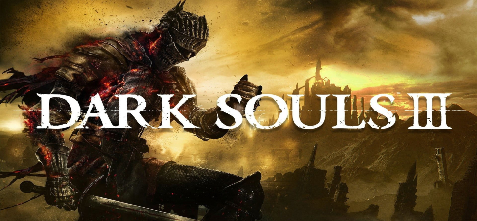
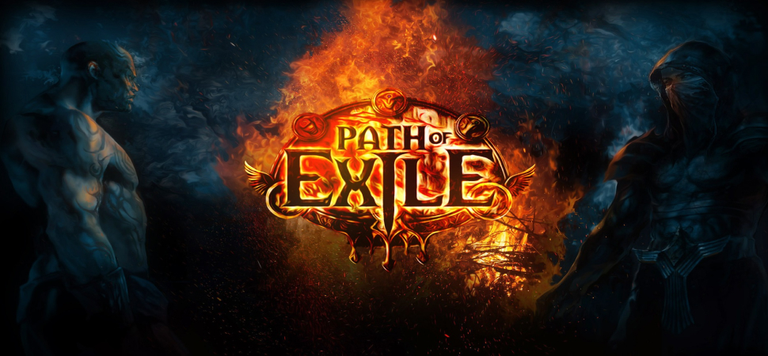
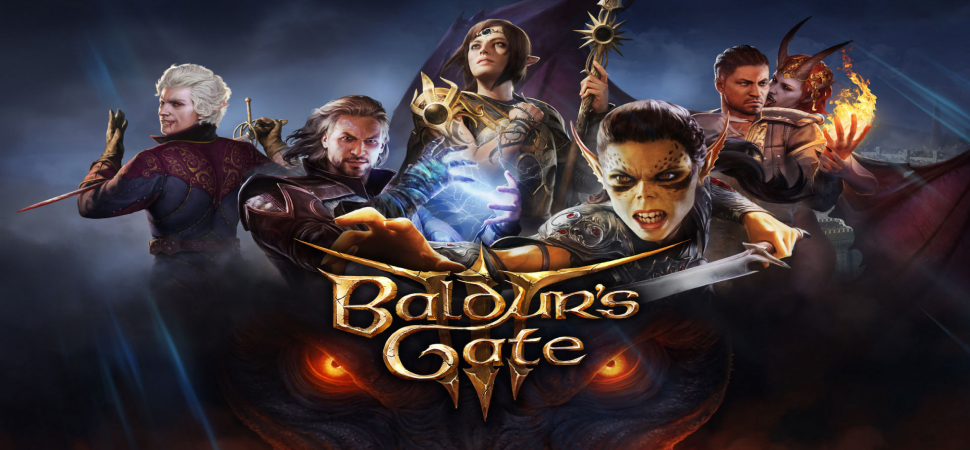
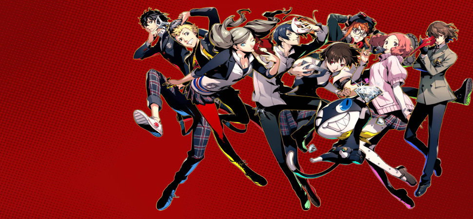
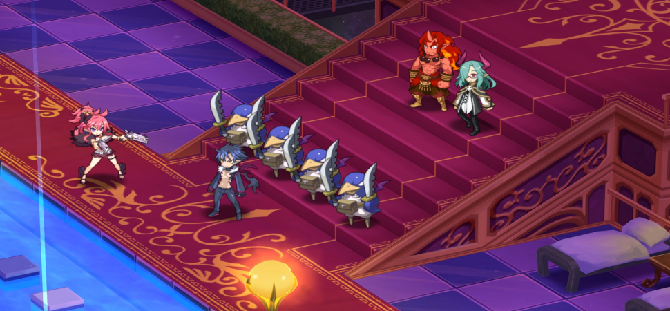

 action RPG Dark Souls III является лучшей игрой в жанре action RPG благодаря своей жесткой, но справедливой сложности, увлекательному геймплею, глубокой и интересной боевой системе, великолепному дизайну уровней и боссов, атмосферному миру с оригинальным сеттингом, а также возможности исследования и развития персонажа, создавая неповторимый опыт игры для всех любителей жанра.
 Hack'n'Slash RPG Path of Exile является лучшей игрой в жанре Hack'n'Slash RPG благодаря огромному количеству контента и возможностей для персонализации персонажей, сложной и глубокой системе прокачки и умений, множеству уникальных предметов и модификаций, динамичным битвам с огромными толпами врагов, постоянным обновлениям и поддержкой разработчиков, что создает захватывающий и насыщенный игровой опыт для любителей жанра.
 true RPG Baldur's Gate 3 является лучшей игрой в жанре true RPG благодаря масштабному игровому миру, глубокой и сложной системе создания персонажа, интересным квестам и сюжету, моральным выборам с реальными последствиями, великолепному характерному оформлению и диалогам, а также возможности исследования и влияния на игровой мир, что создает уникальный и погружающий игровой опыт для поклонников истинных RPG.
 JRPG Persona 5 является лучшей игрой в жанре JRPG благодаря увлекательному сюжету с элементами социальной жизни, глубоким персонажам с развитой историей, стильному и уникальному визуальному стилю, атмосферной музыке, тактическим пошаговым боям, множеству квестов и активностей в игровом мире, что создает неповторимый и захватывающий игровой опыт для поклонников жанра JRPG.
 Тактические RPG Disgaea 5 является лучшей игрой в жанре Тактические RPG благодаря глубокой и стратегической боевой системе, огромному количеству контента и возможностей для развития персонажей, веселому и эксцентричному сюжету, множеству уникальных фич и механик игры, креативному геймплею и бесконечным возможностям для экспериментов, что делает игру уникальным и захватывающим опытом для поклонников жанра Тактические RPG.